4. Componentes de varianza y correlación intra-clase
Enlace de la clase: https://youtu.be/ibgna6SOZ1A
Para esta lección, vamos a emplear los datos de un pequeño experimento para asentar mejor los conceptos. El experimento consiste en comparar la longitud de la vaina en diferentes plantas (s=5). Para ello, se miden n=8 muestras de cada planta.
| 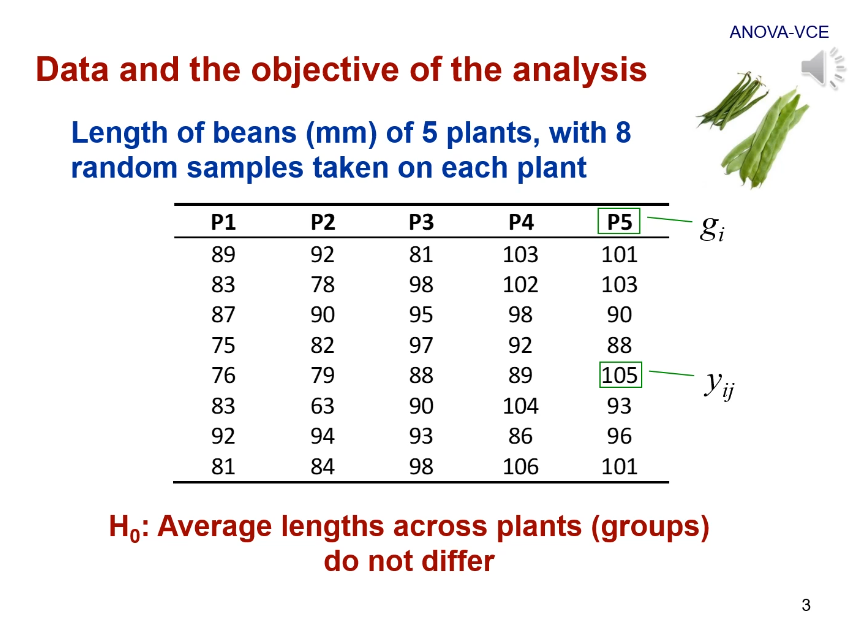 |
|---|
| Figura 1. Datos del experimento que usaremos durante esta lección. |
Hay que tener en cuenta de que este diseño es equilibrado, es decir, tiene el mismo número de observaciones para cada grupo.
Adicionalmente, dejo aquí una figura adicional que resume las propiedades de los sumatorios (Figura adicional 1a) y las propiedades de las expectaciones y las varianzas (Figura adicional 1b)
 |
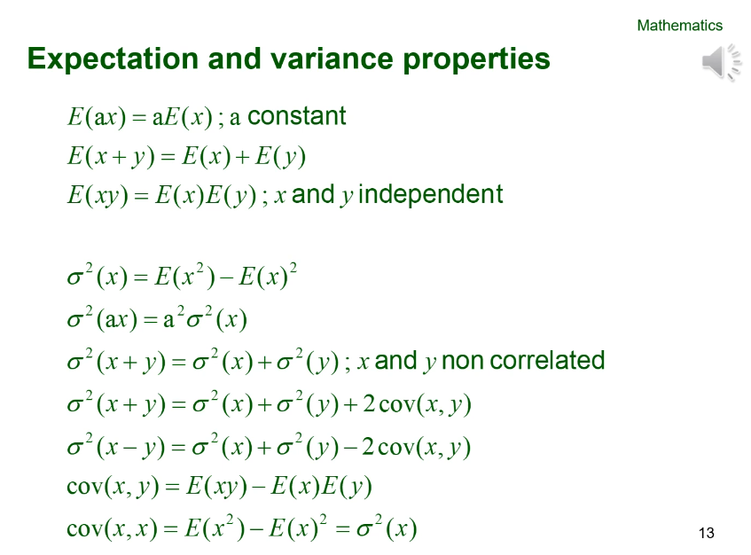 |
|---|---|
| Figura adicional 1a. Propiedades de los sumatorios. | Figura adicional 1b. Propiedades de las expectaciones y las varianzas. |
4.1. ANOVA
Para hacer un ANOVA, tenemos que en primer lugar descomponer la varianza en dos componentes: la varianza dentro de cada grupo y la varianza entre grupos. Para hacer este análisis, asumimos un modelo lineal aditivo en el que cada valor depende de una media general (\(\mu\)), el efecto de cada planta (\(g\)) y el error (\(e\)).
El error (\(e\)) recoge el resto de efectos que no se incluyen en el modelo. Por ejemplo, para este modelo el error recogería el efecto de la temperatura, la humedad, la presión, etc.
| 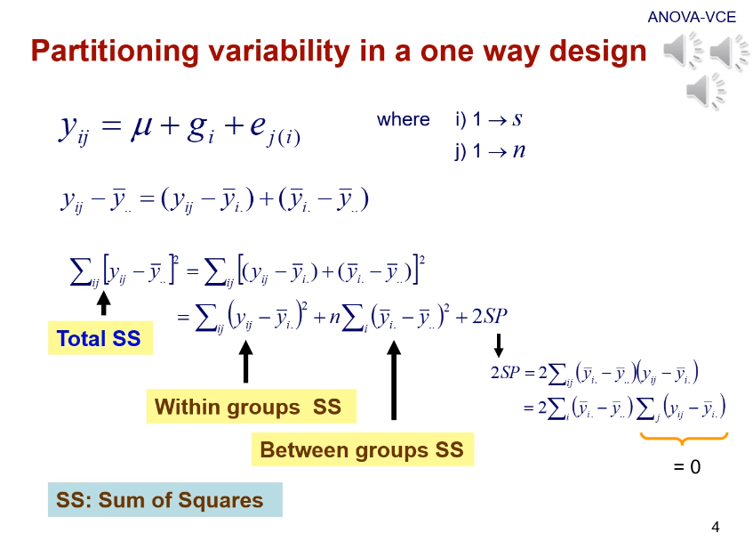 |
|---|
| Figura 2. Descomposición de la varianza asumiendo un modelo lineal aditivo. \(y_{ij}\) es el valor de cada muestra \(j\) en cada planta \(i\); \(\overline{y}_{..}\) es la media general; \(\overline(y)_{i.}\) es la media de cada grupo. |
La variación se mide como la suma de cuadrados (el desarrollo para llegar a las equivalencias aparece en el video):
- La suma de cuadrados total es la desviación de cada muestra respecto a la media general. Su equivalente sería \(\sum_{ij}y^2_{ij} - \frac{y^2_{..}}{sn}\)
- La suma de cuadrados "intra-grupo" es la desviación de cada observación a la media de su grupo. Su equivalente sería \(\sum_{ij}y^2_{ij} - \frac{1}{n} \sum_{i}y^2_i\)
-
La suma de cuadrados "inter-grupo" es la desviación de cada media grupal a la media general. Su equivalente sería \(\frac{1}{n} \sum_{i}y^2_i - \frac{y^2_{..}}{sn}\)
Para la suma de cuadrados "inter-grupo", la n está multiplicando la suma de cuadrados porque estaríamos sumando para \(j\) algo que no tiene \(j\). Esto, según las propiedades de los sumatorios (Figura adicional 1a), equivale a multiplicar por el número de \(j\) que tenemos.
Si nos fijamos en las equivalencias de cada suma de cuadrados, podemos observar que las tres se pueden definir a partir de tres cantidades básicas:
- \(\sum_{ij}y^2_{ij}\)
- \(\frac{1}{n} \sum_{i}y^2_i\)
- \(\frac{y^2_{..}}{sn}\)
Con estas equivalencias, podemos construir la clásica tabla de ANOVA (Figura 3). Al resolverla, obtendríamos el estadístico F y a partir de él podríamos determinar la probabilidad de que nuestras conclusiones se deban al azar (p-value).
 |
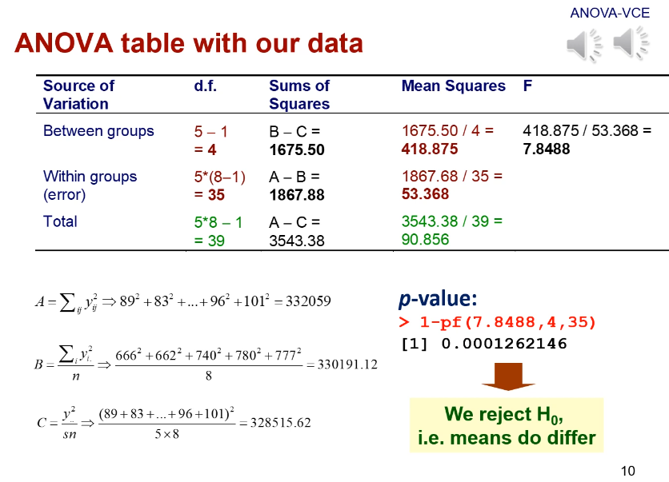 |
|---|---|
| Figura 3a. Tabla ANOVA empleando las cantidades básicas equivalentes. | Figura 3b. Resolución de la tabla ANOVA empleando los datos de nuestro experimento de ejemplo. |
Para nuestro ejemplo, la resolución de la tabla ANOVA (Figura 3b) daría lugar al rechazo de la hipótesis nula, concluyendo que las medias de las vainas de las diferentes plantas difieren.
4.2. Modelos (de efectos) aleatorios
Los modelos aleatorios, al igual que los fijos, tienen una serie de supuestos (Figura 5). En cuanto a los efectos aleatorios:
-
La esperanza de la variable aleatoria (en este caso, la planta) es \(E(g_i) = 0\)
-
La esperanza del efecto de grupo elevado al cuadrado es igual a la varianza entre grupos \(E(g^2_i) = \sigma^2_B\). Esto viene del desarrollo de la primera propiedad de la varianza (Figura adicional 1b):
- \(\sigma^2_B = E(g^2_i) - E(g_i)\)
- como \(E(g_i) = 0\), nos queda \(\sigma^2_B = E(g^2_i)\)
La varianza también se podría anotar como \(\sigma^2_{g_i}\). Al ser la varianza de los efectos de cada planta, también se puede anotar como la varianza entre los grupos de plantas.
-
Se asume independencia de las plantas, ya que \(E(g_i g_{i'}) = 0\)
En cuanto a los errores:
- La esperanza del error es \(E(e_{ij}) = 0\)
- La esperanza de los errores al cuadrado, aplicando un razonamiento similar que en el caso de los efectos, es igual a la varianza de los errores \(E(e^2_{ij}) = \sigma^2_e\)
- Los errores de un mismo grupo y los errores de diferentes grupos son independientes \(E(e_{j(i)} e_{j'(i)}) = E(e_{j(i)} e_{j'(i')}) = 0\)
Para calcular los componentes de varianza, necesitaremos calcular las esperanzas de los cuadrados medios, que eran el cociente de la suma de cuadrados partidos por los grados de libertad. La suma de cuadrados se podía obtener a partir de las tres cantidades básicas: \(\sum_{ij}y^2_{ij}\), \(\frac{1}{n} \sum_{i}y^2_i\) y \(\frac{y^2_{..}}{sn}\).
El cálculo de las esperanzas de estas tres cantidades básicas lo podemos encontrar en la Figura 6.
 |
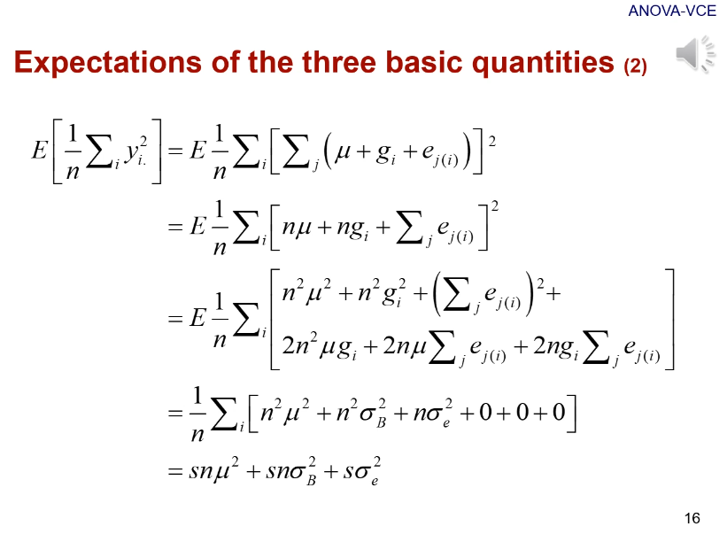 | 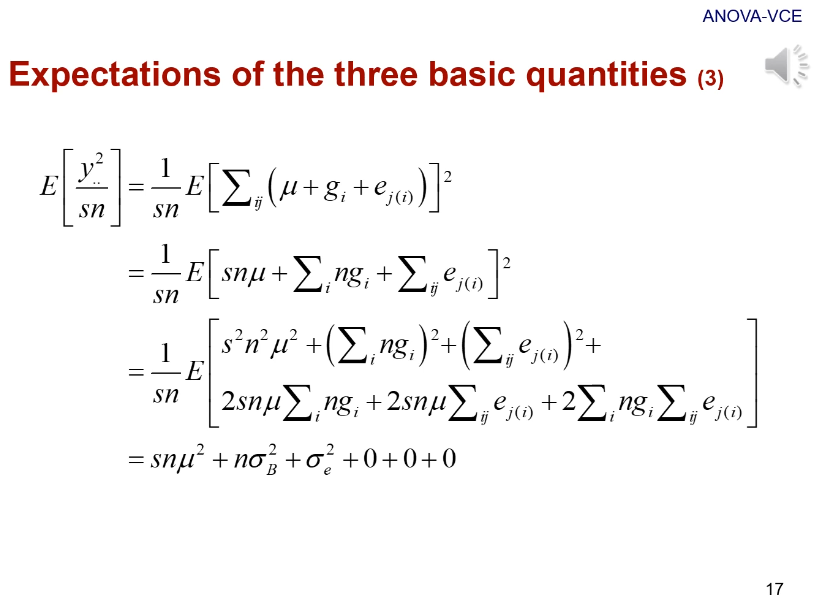 |
|---|---|---|
| Figura 6a. Suma de cuadrados (muestra) | Figura 6c. Suma de cuadrados (grupo) | Figura 6c. Suma de cuadrados (general) |
Ahora calcularemos las esperanzas de las sumas de cuadrados:
-
La esperanza del cuadrado medio del error (o la varianza dentro de los grupos) (Figura 7a) es \(\sigma^2_e\). Esto implica que la esperanza del cuadrado medio del error es un estimador insesgado de la varianza del error.
Un estimador de un parámetro se dice que es insesgado si su valor esperazo es igual al valor verdadero, fuente
-
La esperanza del cuadrado medio entre grupos (Figura 7b) es \(n\sigma^2_B + \sigma^2_e\). En este caso, obtenemos un estimador sesgado.
| 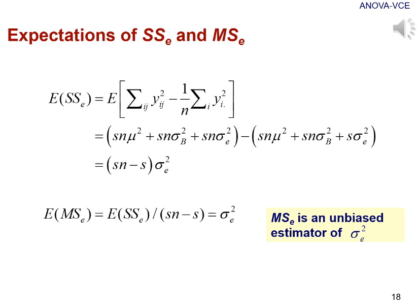 | 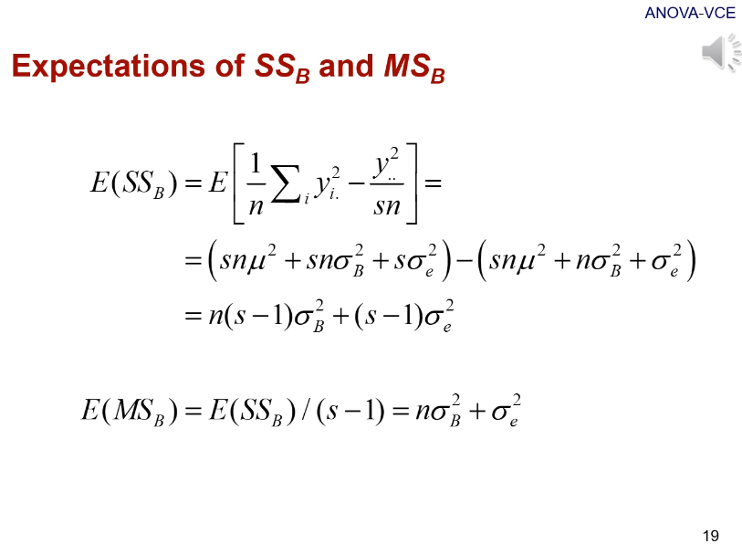 |
|---|---|
| Figura 7a. Esperanza del cuadrado medio del error | Figura 7b. Esperanza del cuadrado medio del efecto |
Para estimar los componentes de varianza, podemos emplear ambas ecuaciones para tener un sistema de dos ecuaciones con dos incógnitas (\(\hat{\sigma}^2_B\) y \(\hat{\sigma}^2_e\)), ya que tanto \(n\) como \(MS_e\) y \(MS_B\) son cantidades conocidas. De este modo, resolviendo este sistema de ecuaciones, podemos obtener las estimaciones para ambos componentes de varianza. El estadístico \(F > 1\) solo se dará cuando \(\sigma^2_B > 0\), por lo que podremos rechazar la hipótesis nula \(\sigma^2_B = 0\).
4.3. Correlación intraclase
La correlación intraclase es la proporción de la variación total atribuida al componente aleatorio estudiado (en este caso, las diferentes plantas). Esta correlación se deriva de la correlación de Pearson. Podemos encontrar su desarrollo en la Figura 8, que concluye que \(r = \frac{\sigma^2_B}{\sigma^2_B\sigma^2_e}\).
| 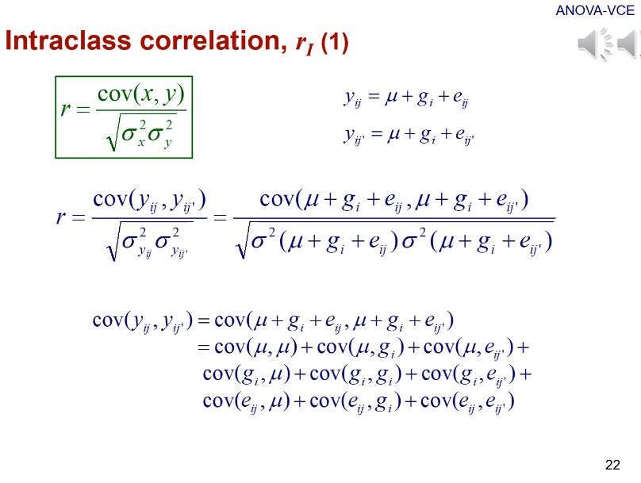 | 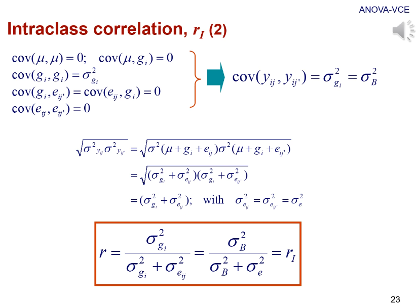 | 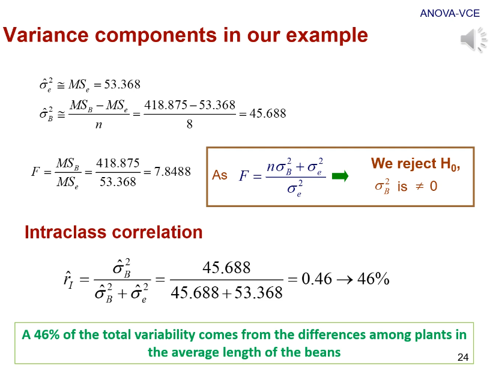 |
|---|---|---|
| Figura 8a. Correlación de Pearson (\(r\)) y covarianza | Figura 8c. Correlación de Pearson (\(r\)) y la raíz cuadrada del producto de las varianzas | Figura 8c. Correlación intraclase de nuestro ejemplo |
Para diseños equilibrados como el que hemos usado de ejemplo, los componentes de varianza estimado obtenidos con un modelo de la partición de la varianza y un modelo REML son idénticas.